Conteúdo criativo com intenção de venda.
Crio vídeos que fazem a sua marca parecer conversa de amiga e vender como anúncio. Roteiro, gravação e edição com cara de gente de verdade.
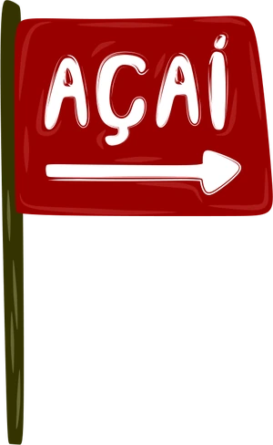
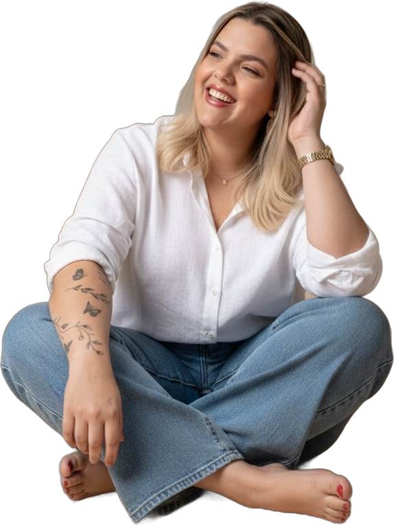
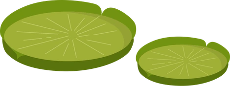
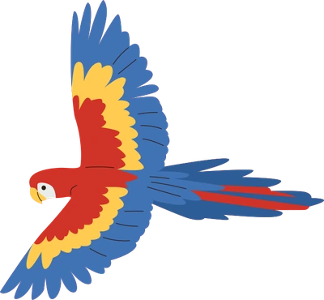
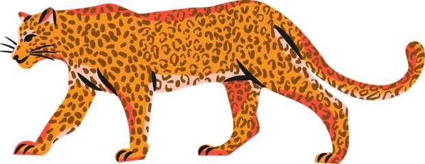
marcas que já confiaram no meu trabalho
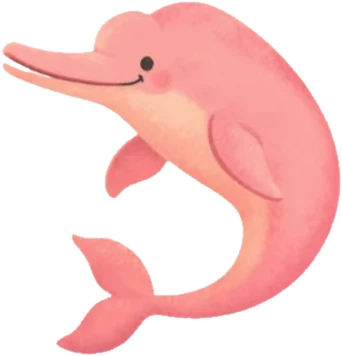
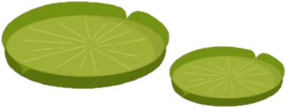
Sua marca tem algo a dizer. Eu transformo isso em conteúdo.
Tenho 30 anos, sou modelo midi size, mãe da Laura, mãe de 2 pets, empreendedora e estou em processo de emagrecimento -30kg.
Na criação de conteúdo eu transformo minha rotina real em vídeos dinâmicos, criativos e com alta retenção, pensados para prender a atenção desde o primeiro segundo e fazer a audiência assistir até o final.
Sou de Belém - PA e levo para o conteúdo uma comunicação leve, natural e estratégica, que gera conexão de verdade e faz o público confiar e comprar.
Manu Melo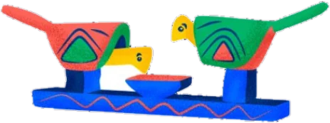
Conteúdos de destaque
Três vídeos que mostram bem o meu jeito de criar. Toque em qualquer um para assistir.
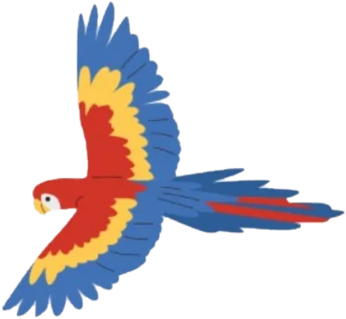
Trabalhos por nicho
Deslize em cada nicho para ver os vídeos. Toque em um vídeo para assistir.
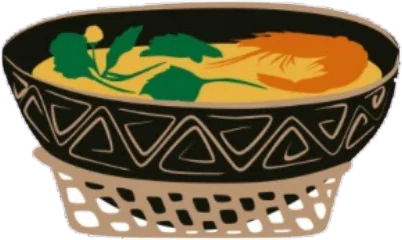
Meus equipamentos de gravação
Gravo com equipamento próprio e tenho um cenário pronto para a sua marca.
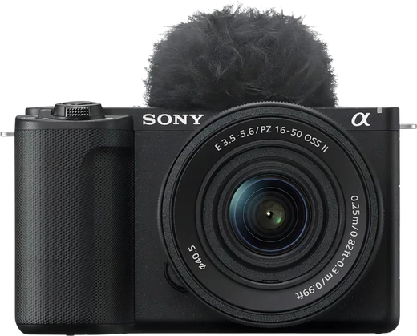
Sony ZV E10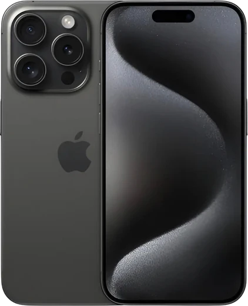
iPhone 15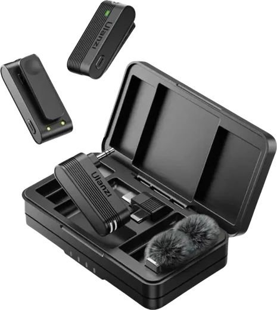
Mic Ulanzi A100
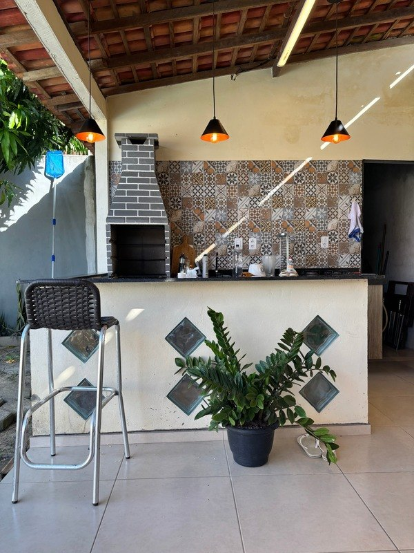
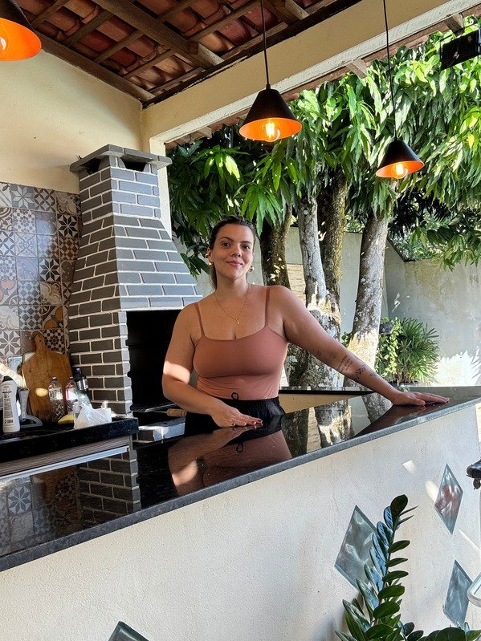
Opção de cenário
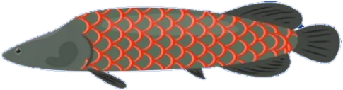
Como eu te ajudo
Do vídeo único ao pacote do mês inteiro. Me conta o seu objetivo e eu monto o formato ideal.
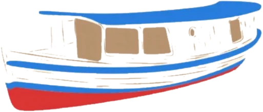
Resultados e palavras de quem confia
o que as marcas dizem
Avaliações de quem já trabalhou comigo
Bora criar juntos
Me conta sobre a sua marca e o que você precisa. Eu respondo rapidinho.
Recebi, obrigada!
Sua mensagem chegou por aqui. Respondo em até um dia útil. Se preferir agilizar, me chama no WhatsApp.
Enviar também pelo e-mail